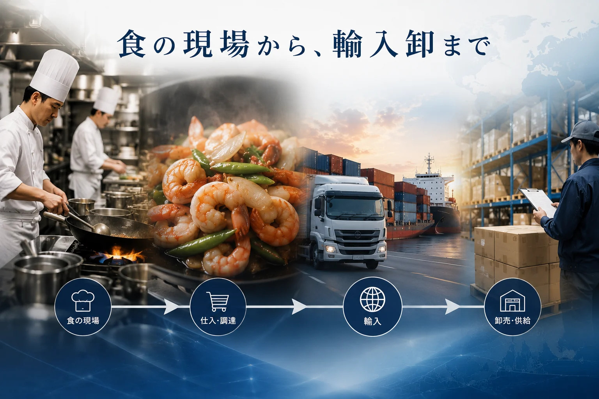
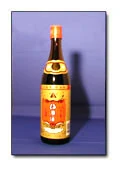
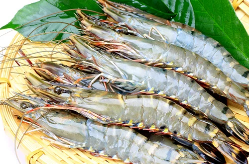

食の現場から、輸入卸まで。
株式会社福進発展は、1995年の創業以来、中華レストラン「海老専家」を中心に飲食店運営を行ってきました。現在は、飲食店運営で培った現場感覚を活かし、弁当の製造・卸販売、紹興酒・中国酒の輸入卸販売、水産物・中国食品の輸入卸業務も展開しています。
事業紹介
中華レストラン経営を原点に、弁当の製造・卸販売、中国酒と食品の輸入卸へ事業を広げています。
株式会社福進発展は、1995年の創業以来、中華レストラン「海老専家」を中心に飲食店運営を行ってきました。現在は、飲食店運営で培った現場感覚を活かし、弁当の製造・卸販売、紹興酒・中国酒の輸入卸販売、水産物・中国食品の輸入卸業務も展開しています。

Restaurant
「海老専家」を中心に、本格的な中国料理を提供する店舗運営を行っています。
詳しく見る
Liquor Import & Wholesale
紹興酒、老酒、和酒などを取り扱い、飲食事業者へ中国酒を届けています。
詳しく見る
Food Import & Wholesale
水産物や中国食品の輸入・卸業務を行い、取引先へ安定した商品供給を行っています。
詳しく見る
Bento Production & Wholesale
中華レストランの運営で培った調理経験を活かし、セントラルキッチンで弁当を製造。店頭での昼食販売に加え、法人向けの卸販売にも対応しています。
詳しく見るBento Production & Wholesale
中華レストランの運営で培った調理経験を活かし、セントラルキッチンで弁当の製造・販売を行っています。
店頭での昼食販売に加え、法人向けの卸販売にも対応。多いときには1,500食以上を製造するなど、まとまった数量の弁当づくりにも取り組んでいます。
今後は新たな取引先との連携を広げ、より多くの方々に食を届けていきます。
福記美食は、セントラルキッチンでの弁当製造・販売を中心とした事業拠点です。
中華レストランの運営で培った調理経験を活かし、昼食向けの弁当販売や法人向け卸販売を展開しています。
多いときには1,500食以上の弁当を製造するなど、まとまった数量の製造にも取り組んでいます。
※現在、店内でのお食事の提供は行っていません（お弁当の店頭販売は行っています）。
弁当事業の詳細を見る
レストラン事業、弁当事業、中国酒、食品輸入卸に関するご相談はお問い合わせページよりご連絡ください。